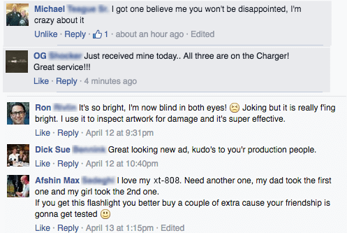
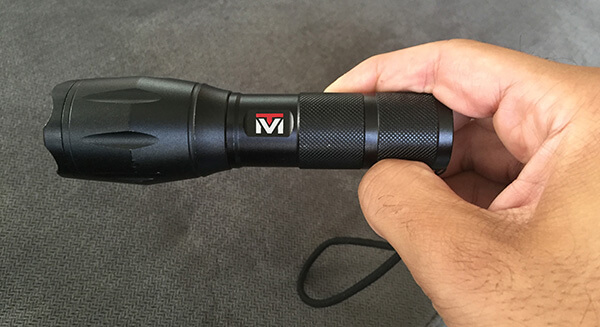

Why?
With the rise of domestic terrorism and stricter gun laws to contend with, Americans are searching for better ways to prepared for any situation.
The Solution?
Simply put; a flashlight! And not just any flashlight… The XT-808 Military Grade Flashlight from Tactical Mastery! It has just been released to the public and is already going viral.
It is amazingly bright (1200 Lumens), has a long lasting battery life and is made from military grade aluminum for extra durability. Its blinding lamp strength, of 1200 lumens, can be seen for up to 2 miles away. At less than 6 inches in length, it is compact and light weight which makes it perfect for taking with you anywhere you go.
Survival Professionals Note:
NOT being prepared for emergency situations is the #1 Mistake American’s can make. Being prepared with something as simple as a Tactical Flashlight could be the difference between life and death!
What other people are saying
What is a Tactical Flashlight?
Police Officers, Military members, fire departments, Navy Seals or The Coast Guard (to name a few) All use “Tactical Flashlights”. Why? Because, they are ultra-bright, compact, light- weight and made to last.
Ever had your picture taken and been temporarily blinded by the Flash? Now think about how it would be if you had a light that is 100’s of times brighter Flashing repeatedly in your eyes. You would be more than blinded, you would be looking the other direction trying to understand how to make the “flashing” go away.
That is the type of effect that you can cause with a high-grade Tactical Flash Light like the Tactical Mastery XT-808 It is so bright it can temporarily blind someone – so be careful!
Most people are Unaware or Underestimate the Importance of a Flashlight…
Having a reliable easy to use Flashlight – that is extremely bright, and has seemingly endless battery life, can help in any situation! A late night walk alone, a car breakdown on the side of the road, deterring and animal while camping or simply having your power go out in your home, Tactical Flashlights can Help in any situation!
Not to mention and Emergency Situation – What better tool than a flashlight that can be seen for up to 2 Miles!
“Being prepared for anything is more important now than ever for all Americans. Having a flashlight in your Nightstand, your car, or camping gear, or simply when you look for your dog… Being prepared can’t be over looked and a flashlight is one of the single best pieces of gear you can carry!
Click here to Check AvailabilityTactical flashlights like theTactical Mastery XT-808 are used by the U.S. Navy Seals, the Coast Guard, Firemen, Policemen, U.S. Search and Rescue and now American citizens.
These tactical Flashlights are selling for 75% off their normal price! So it's a good time to get them at a discounted price. If you want to make sure you and your loved ones are always prepared for the worst, this flashlight is a great start. It has our vote!
You Can Also Upgrade to a Tactical Kit at 75% Off!
Tactical flashlights like the Tactical Mastery XT-808 are used by the U.S. Navy Seals, the Coast Guard, Firemen, Policemen, U.S. Search and Rescue and now American citizens.
Upon receiving a XT-808 Kit from Tactical Mastery, The Packaging it came in told us it was a serious light! A Protective case similar to a handgun case - awesome. The light was compact and sleek and easy to use.
After putting in the batteries and trying them out, it's clear that these are the brightest flashlights we've ever held. And after turning on the strobe mode for 5 seconds we had to turn it off because it was incredibly disorienting.
After playing with the light for just 5 minutes, it's obvious why so many people are buying these. This is clearly a tool you can and should take with you everywhere.
This is not a light you want to be caught on the receiving end of!